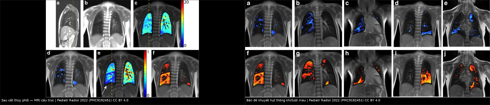
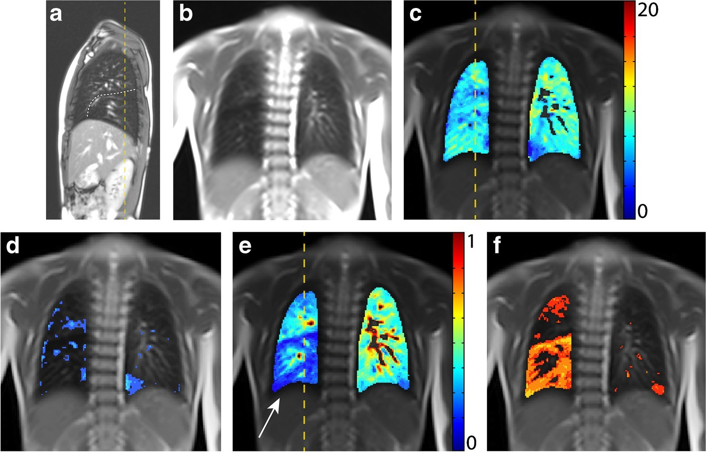
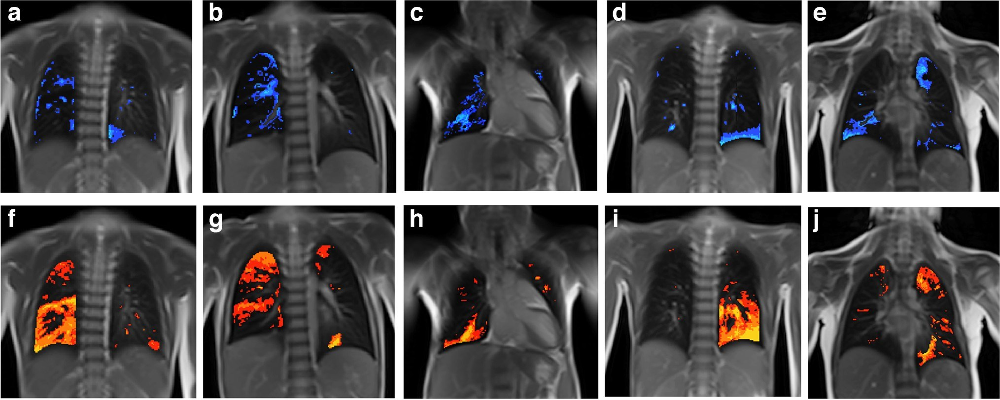

049 — Theo dõi dài hạn sau cắt thùy phổi bẩm sinh ở trẻ: phổi còn lại, vẹo cột sống & lịch chụp lại
Tags: pattern:hau-mo pattern:qua-sang vung:phoi protocol:MRI-chuc-nang protocol:spirometry protocol:CT-lieu-thap anatomy:phoi-thuy
Mức chắc chắn (certainty): tổng hợp y văn (literature synthesis) — số liệu từ loạt 56 trẻ hậu phẫu có theo dõi hô hấp (PMC13572718), so sánh cắt thùy vs cắt tiết kiệm nhu mô (PMC13314818), nghiên cứu MRI cấu trúc – chức năng ở tuổi học đường (PMC9192451) và khảo sát di chứng sau mở ngực ở trẻ (PMC3853854); lịch theo dõi đề xuất ở mục 4 là suy luận của bài (y văn chưa có đồng thuận), đã ghi rõ.
1. Tổng quan bệnh học – cơ chế hình ảnh
- Bối cảnh: trẻ đã cắt thùy phổi vì dị dạng phổi bẩm sinh (congenital lung malformation — CLM): CPAM (bài 698), khí phế thũng thùy bẩm sinh/hẹp phế quản (bài 699), cách ly phổi (sequestration), nang phế quản. Câu hỏi của bài không phải "mổ hay không" mà là "sau mổ thì theo dõi cái gì, bằng gì, bao lâu".
- Sinh lý – vì sao phổi còn lại trông "khác thường" nhưng là bình thường: sau cắt thùy, thể tích lồng ngực bên mổ không giảm tương ứng — phổi còn lại giãn ra (expansion) lấp khoảng trống, trung thất dịch về bên mổ, cơ hoành cao lên, các thùy còn lại tăng thể tích. Ở trẻ nhỏ, còn có tăng sinh phế nang thật (compensatory growth) trong vài năm đầu; ở trẻ lớn hơn, phần lớn là giãn phế nang (distension) hơn là tăng sinh (PMC9192451).
- TẠI SAO MRI chức năng "bắt" được điều mà X-quang/CT không thấy: vùng phổi giãn vào chỗ thùy đã cắt thông khí và tưới máu tại chỗ giảm — trên MRI, bản đồ khuyết hụt thông khí (fractional ventilation defect) và khuyết hụt tưới máu (perfusion defect) hiện vùng "nóng" đúng vị trí thùy đã cắt, trong khi phần phổi còn lại bình thường. Đây là khiếm khuyết chức năng khu trú, không phải tổn thương mới (PMC9192451).
- Vì sao xét nghiệm chức năng hô hấp "bình thường" vẫn có thể có bất thường: sau cắt thùy, FVC và FEV₁ thường thấp hơn nhẹ so với trẻ cùng tuổi nhưng vẫn trong khoảng tham chiếu; khi đo bằng chỉ số thanh thải phổi (lung clearance index — LCI) hoặc MRI chức năng, bất thường đồng đều thông khí vẫn lộ ra. Vì vậy đừng kết luận "ổn" chỉ dựa vào spirometry (PMC9192451).
- Dịch tễ – những gì thực sự gặp khi theo dõi (số liệu để tư vấn phụ huynh):
- Loạt 56 trẻ hậu phẫu CLM, theo dõi tới trung vị 54 tháng: vẹo cột sống 17,9%, biến dạng lồng ngực (pectus) 14,3%; chiều cao và cân nặng z-score bình thường (−0,01 và −0,15); spirometry gần bình thường (FVC z = −0,77; FEV₁ z = −0,84) nhưng chỉ 26,7% trẻ được đo (PMC13572718).
- Sau mở ngực posterolateral ở trẻ: cánh tay xương bả vai nhô 5,7%, vai cao bên mổ 5,7%, sẹo dính vào khung xương 7,7%, thiểu sản cơ ngực 11,5%, dính sườn 5,7%, sườn dồn 9,6%, vẹo cột sống Cobb > 10° 1,9% (PMC3853854).
- Cắt thùy vs cắt tiết kiệm nhu mô (lung-sparing): 31 trẻ, theo dõi trung vị 71 tháng — mổ lại 0% vs 33% (p = 0,0207); biến dạng thành ngực 22% vs 43% (p = 0,36); biến chứng sớm 19% vs 44% (p = 0,20) (PMC13314818).
- Nguy cơ dài hạn cần nhớ (lý do không được "mất theo dõi"):
- Tồn lưu/tái phát tổn thương khi cắt không trọn (đặc biệt cắt tiết kiệm nhu mô) → mổ lại (PMC13314818).
- Ác tính: PPB (pleuropulmonary blastoma) có thể phát sinh trong CPAM type 4 — type 4 thực chất là PPB type I (bài 698); ung thư biểu mô nhầy (mucinous adenocarcinoma) hiếm nhưng đã gặp trên nền CPAM type 1/2, có liên quan KRAS — trong loạt 56 trẻ có 2 ca CPAM + mucinous adenocarcinoma, 1 ca KRAS dương (PMC13572718).
- Biến dạng cột sống – lồng ngực tiến triển theo tăng trưởng, đặc biệt sau mở ngực và khi mổ lúc còn nhỏ (PMC3853854, PMC13572718).
- Bệnh phổi mạn/giãn phế quản quanh chỗ mổ, tắc nghẽn phế quản do hẹp/mềm sụn, xẹp phổi tái diễn.
2. Mẫu hình + chẩn đoán phân biệt theo vị trí (gamut)
- Mẫu hình "bình thường sau mổ": trung thất dịch về bên mổ, cơ hoành bên mổ cao, phổi còn lại tăng sáng và giãn vào khoang đã cắt, đường kẹp/staples thẳng, màng phổi dày mỏng đều, không có nang mới, không có nốt.
- Gamut theo hình ảnh "thùy/phổi tăng sáng sau mổ":
- Giãn bù sinh lý của phổi/thùy còn lại — phổ biến nhất, không can thiệp.
- Tồn lưu dị dạng (CPAM còn phần nang, sequestration còn phần nhu mô bất thường) — có nang/nốt mới hoặc không giảm theo thời gian.
- Tắc nghẽn phế quản (hẹp do sẹo, mềm sụn, dị vật, xoắn phổi) — tăng sáng + mạch máu thưa, thể tích tăng, có thể xẹp phổi từng đợt.
- Tràn khí màng phổi/bóng khí sau mổ — màng phổi có khí, không có vách nang.
- Nhiễm trùng – áp-xe quanh chỗ mổ — đông đặc, mức khí – dịch, sốt.
- Gamut theo triệu chứng khi theo dõi:
- Khò khè/hít vào kéo dài, một bên: hẹp phế quản, mềm sụn, xoắn thùy còn lại.
- Ho đàm tái diễn: giãn phế quản quanh chỗ mổ, tồn lưu dị dạng.
- Đau lưng – vai, vai cao, lệch vai: biến dạng lồng ngực/vẹo cột sống.
- Không triệu chứng, chỉ "phổi tăng sáng" trên phim: giãn bù — không chụp CT lặp tràn lan.
- Mnemonic "GROW": Giãn bù (bình thường) – Residual (tồn lưu) – Obstruction (tắc nghẽn) – Wall/spine (thành ngực, cột sống). Khi đọc phim sau mổ, luôn tự hỏi đủ 4 khả năng này trước khi kết luận.
3. Bảng so sánh phân biệt (ma trận đối chiếu)
| Tình huống | Hình ảnh | Chốt vào (rule-in) | Chốt loại (rule-out) | Gợi ý xác nhận |
|---|---|---|---|---|
| Giãn bù sinh lý | Phổi còn lại tăng sáng, thể tích tăng, trung thất dịch về bên mổ, cơ hoành cao; mạch máu đều, mảnh, không nang mới | Đúng vị trí thùy đã cắt + không nang/nốt mới + trẻ không triệu chứng | Có nang mới, nốt, đông đặc → tồn lưu/nhiễm trùng; thể tích giảm → xẹp | So phim cũ; không cần CT nếu không triệu chứng |
| Tồn lưu dị dạng | Nang/nốt còn lại trong thùy còn lại hoặc bờ cắt; kích thước không giảm theo thời gian | Nang/nốt mới hoặc không thay đổi qua 2 lần chụp cách ≥ 6–12 tháng | Phổi giãn bù thuần, không nang → không phải tồn lưu | CT ngực liều thấp khi có triệu chứng/nghi ngờ; đối chiếu mô học lần mổ |
| Tắc nghẽn phế quản | Tăng sáng một thùy, mạch máu thưa, thể tích tăng, có thể xẹp từng đợt; phim thì thở ra cho thấy khí bị giữ | Tăng sáng + mạch thưa + khí giữ thì thở ra + khò khè một bên | Mạch máu bình thường, không khí giữ → giãn bù | CT thì hít – thở ra, nội soi phế quản nếu nghi hẹp/dị vật |
| Nhiễm trùng/áp-xe | Đông đặc, mức khí – dịch, dày màng phổi khu trú, có thể rò phế quản – màng phổi | Sốt + đông đặc/mức khí – dịch + bạch cầu tăng | Không sốt, không đông đặc → giãn bù | X-quang/CT, cấy đàm, siêu âm màng phổi |
| Biến dạng thành ngực – vẹo cột sống | Vai cao bên mổ, sườn dồn/dính sườn, pectus, Cobb > 10° khi trẻ lớn | Khám lâm sàng bất thường (Adams, vai lệch) ± Cobb > 10° | Lồng ngực đối xứng, không lệch vai → theo dõi lâm sàng | Khám định kỳ; X-quang cột sống khi lâm sàng nghi; đo Cobb |
| Ác tính (PPB/adenocarcinoma) | Nang nhiều vách tăng sinh, nốt đặc trong nang, khối mới, tràn dịch | Khối/nốt mới tăng dần + tiền sử CPAM type 4/1 | Nang ổn định, không thành phần đặc → lành | CT có cản quang, chuyển ung thư nhi; đối chiếu mô học |

Trái: MRI cấu trúc — thùy giữa giãn vào khoang thùy dưới phải đã cắt, mạch máu trong vùng giãn thưa. Phải: bản đồ khuyết hụt thông khí và tưới máu — vùng "nóng" đúng vị trí thùy đã cắt, phần phổi còn lại bình thường. Nguồn: Willers C et al., Pediatric Radiology 2022 (PMC9192451) Fig. 1 và Fig. 6, CC BY 4.0. Ghép letterbox, không crop.4. Protocol chụp + hệ phân độ/điểm chuẩn hoá
- Nguyên tắc: theo dõi sau cắt thùy bẩm sinh là theo dõi chức năng – tăng trưởng – thành ngực, không phải chụp CT định kỳ. Y văn chưa có lịch đồng thuận; loạt lớn nhất chỉ đo được spirometry ở 26,7% trẻ và kết luận cần theo dõi hô hấp nhi có cấu trúc (PMC13572718) — nên lịch dưới đây là đề xuất thực hành (suy luận), cần cá thể hóa.
- Đánh giá ngay sau mổ (trong 3 tháng):
- X-quang ngực 1 lần (hoặc khi có triệu chứng): kiểm tra giãn bù, tràn khí, xẹp, mức dịch; không chụp lặp nếu hồi phục bình thường.
- Siêu âm màng phổi nếu còn dẫn lưu/nghi tụ dịch.
- Theo dõi 1–5 tuổi: khám lâm sàng mỗi 6–12 tháng — cân nặng, chiều cao, ho/khò khè tái diễn, số đợt viêm phổi, khám lồng ngực – vai – cột sống (tư thế, Adams). Không chụp hình thường quy nếu không triệu chứng.
- Từ 5–6 tuổi (hợp tác được): spirometry (FVC, FEV₁, FEV₁/FVC) làm mốc nền; lặp lại khi có triệu chứng hoặc mỗi 2–3 năm. Nhớ rằng giá trị thấp nhẹ vẫn có thể bình thường sau cắt thùy (FVC z −0,77; FEV₁ z −0,84) (PMC13572718).
- Khi nào chụp CT ngực: có triệu chứng (ho đàm kéo dài, khò khè một bên, viêm phổi tái diễn cùng bên), nghi tồn lưu, hoặc bất thường mới trên X-quang — dùng CT liều thấp, không cản quang, lớp 1 mm; không dùng CT làm xét nghiệm sàng lọc định kỳ.
- Khi nào chụp MRI chức năng: chỉ định nghiên cứu/chuyên khoa khi cần lượng hóa khiếm khuyết vùng (thông khí/tưới máu) hoặc giải thích triệu chứng không tương xứng; không thay thế spirometry trong thực hành thường (PMC9192451).
- Cột sống – thành ngực: khám lâm sàng mỗi lần tái khám; X-quang cột sống khi vai lệch rõ, pectus tiến triển, hoặc Adams dương — đo Cobb, so sánh các mốc tăng trưởng (PMC3853854, PMC13572718).
- Chuyển tiếp (transition) sang người lớn: bàn giao hồ sơ mổ + mô học (đặc biệt CPAM type 1/4 vì nguy cơ ác tính), kết quả spirometry nền, và khuyến cáo không hút thuốc — nguy cơ adenocarcinoma trên nền CPAM là hiếm nhưng có thật (PMC13572718).
flowchart TD
A["Trẻ đã cắt thùy phổi bẩm sinh"] --> B["X-quang ngực 1 lần sau mổ 1-3 tháng"]
B --> C{"Có triệu chứng?<br/>ho đàm / khò khè / viêm phổi tái diễn"}
C -- Không --> D["Khám 6-12 tháng: tăng trưởng, lồng ngực, cột sống, vai"]
C -- Có --> E["CT ngực liều thấp + nội soi phế quản nếu nghi hẹp"]
D --> F{"5-6 tuổi?"}
F -- Có --> G["Spirometry mốc nền, lặp mỗi 2-3 năm hoặc khi triệu chứng"]
F -- Không --> D
E --> H{"Tồn lưu / hẹp / giãn phế quản?"}
H -- Có --> I["Hội chẩn ngoại nhi - hô hấp nhi, kế hoạch can thiệp"]
H -- Không --> D
G --> J{"Vai lệch / pectus / Adams dương?"}
J -- Có --> K["X-quang cột sống, đo Cobb, chuyển chỉnh hình"]
J -- Không --> L["Tiếp tục khám hằng năm tới tuổi trưởng thành"]
K --> L
L --> M["Chuyển tiếp: hồ sơ mổ + mô học + spirometry nền + tư vấn thuốc lá"]
5. Biến thể bình thường và cạm bẫy
- Cạm bẫy 1 — đọc "phổi tăng sáng" là tràn khí: sau cắt thùy, phổi còn lại giãn bù trông rất sáng; phân biệt bằng mạch máu còn đi vào vùng sáng (giãn bù) với màng phổi có khí, không mạch máu (tràn khí).
- Cạm bẫy 2 — tưởng trung thất bị đẩy sang bên lành: sau cắt thùy, trung thất dịch về bên mổ là bình thường; chỉ lo khi đẩy sang bên lành (tràn dịch/khí nhiều, thoát vị).
- Cạm bẫy 3 — đo Cobb trên phim xoay: phim X-quang xoay làm Cobb sai lệch; chụp thẳng, đứng, đúng tư thế, đo trên phim đứng khi có chỉ định.
- Cạm bẫy 4 — "spirometry bình thường = phổi bình thường": FEV₁/FVC có thể bình thường nhưng LCI tăng và MRI chức năng có khuyết hụt khu trú; đừng bỏ theo dõi (PMC9192451).
- Cạm bẫy 5 — quy mọi nốt mới là tái phát: hạt cùi/staples, dày màng phổi khu trú, xoẹp phổi có thể giả nốt; cần so phim cũ và CT mỏng trước khi kết luận.
- Cạm bẫy 6 — bỏ qua nguy cơ ác tính ở CPAM type 1/4: tỉ lệ rất thấp nhưng PPB type I = CPAM type 4, và adenocarcinoma nhầy có thể xuất hiện muộn; khối/nốt tăng dần phải chuyển ung thư nhi (PMC13572718, bài 698).
- Cạm bẫy 7 — chụp CT quá nhiều ở trẻ: mỗi CT tích lũy liều; chỉ chụp khi thay đổi xử trí. Đây là lý do lịch theo dõi đặt lâm sàng + spirometry lên trước hình ảnh.
- Biến thể bình thường cần biết: dày màng phổi mỏng, đều vài mm sau mổ; đường kẹp kim loại; cơ hoành cao nhẹ bên mổ; giảm nhẹ FVC — tất cả có thể tồn tại suốt đời mà không cần can thiệp.
6. Tự lượng giá — Blind Quiz
Ca 1 — Bé gái 7 tuổi, đã cắt thùy dưới phổi phải vì tổn thương hybrid (sequestration + CPAM type 1). MRI dưới đây.

- Gợi ý lâm sàng: không triệu chứng, LCI 8,37 (tăng), spirometry trong giới hạn bình thường.
- Câu hỏi: mô tả vị trí thùy giãn (a, b)? Hai bản đồ chức năng (d, f) cho thấy gì và vì sao spirometry vẫn bình thường?
Bấm để hiện đáp án (findings + chẩn đoán)
- Dấu hiệu: (a, b) thùy giữa giãn vào khoang thùy dưới phải đã cắt, mạch máu trong vùng giãn thưa; (d) khuyết hụt thông khí 13,1% — trong giới hạn bình thường; (f) khuyết hụt tưới máu 26,1% — tăng, đúng vùng thùy giữa đã giãn vào (mũi tên trắng).
- Chẩn đoán: giãn bù sau cắt thùy dưới phải, khiếm khuyết tưới máu khu trú nhiều hơn thông khí.
- Vì sao spirometry bình thường: tổn thương khu trú ở vùng đã cắt, phần phổi còn lại bù được; LCI tăng phản ánh bất thường phân bố thông khí toàn bộ mà FEV₁ không bắt được.
- Ý nghĩa: không can thiệp; tiếp tục theo dõi lâm sàng – spirometry, không chụp CT định kỳ.
- Nguồn ảnh: Willers C et al., Pediatric Radiology 2022 (PMC9192451) Fig. 1, CC BY 4.0.
Ca 2 — Năm trẻ sau cắt thùy phổi, bản đồ khuyết hụt thông khí (hàng trên) và tưới máu (hàng dưới).

- Gợi ý lâm sàng: tất cả đều không triệu chứng ở tuổi học đường; một số có LCI tăng.
- Câu hỏi: vùng "nóng" trên bản đồ tương ứng với gì? Vì sao khuyết hụt tưới máu thường rõ hơn thông khí? Điều này nói gì về bản chất "giãn bù"?
Bấm để hiện đáp án (findings + chẩn đoán)
- Dấu hiệu: vùng màu xanh (thông khí) và cam (tưới máu) tập trung đúng vùng thùy đã cắt ở cả 5 trẻ; phần phổi còn lại gần như bình thường.
- Vì sao tưới máu rõ hơn: mô phổi giãn vào khoang trống không có hệ mạch phát triển tương ứng — giãn (distension) nhiều hơn tăng sinh thật; thông khí còn được bù nhờ đường thở bên.
- Bản chất "giãn bù": thể tích lấp chỗ trống nhưng chức năng tại chỗ không hoàn hảo — giải thích vì sao trẻ có thể gắng sức kém hơn dù spirometry bình thường.
- Ý nghĩa: dùng MRI chức năng khi cần giải thích triệu chứng; không thay spirometry trong theo dõi thường quy.
- Nguồn ảnh: Willers C et al., Pediatric Radiology 2022 (PMC9192451) Fig. 6, CC BY 4.0.
Ca 3 — Trẻ 6 tuổi sau cắt thùy, khám định kỳ: vai phải cao hơn, lồng ngực hơi lép bên mổ. X-quang ngực bình thường, không triệu chứng hô hấp.
- Gợi ý lâm sàng: bố mẹ lo "phổi bên mổ bị teo"; trẻ chơi thể thao bình thường.
- Câu hỏi: trả lời gia đình thế nào? Có cần CT ngực không? Cần làm gì tiếp theo để theo dõi cột sống?
Bấm để hiện đáp án (findings + chẩn đoán)
- Nhận định: giãn bù sinh lý — trung thất dịch nhẹ về bên mổ, cơ hoành cao, phổi còn lại giãn; không có nang/nốt mới, không đông đặc.
- Tư vấn: phổi không teo mà giãn bù; chức năng toàn bộ thường gần bình thường, nhưng vùng đã cắt có khiếm khuyết tưới máu khu trú (MRI chức năng) — không ảnh hưởng sinh hoạt.
- Có cần CT? Không, nếu không triệu chứng và X-quang ổn định; CT chỉ khi nghi tồn lưu/nhiễm trùng.
- Cột sống: khám Adams + đo vai, chụp X-quang cột sống đứng nếu lệch rõ; vẹo cột sống gặp 17,9% trong loạt theo dõi, phần lớn nhẹ (PMC13572718); tránh chụp lặp không cần thiết.
- Nguồn ảnh: Willers C et al., Pediatric Radiology 2022 (PMC9192451) Fig. 1 + Fig. 6, CC BY 4.0 (ảnh ghép).
Bài liên quan chéo
- 698 – Nang phổi bẩm sinh CPAM/CCAM: Stocker, CVR & quyết định mổ — chỉ định mổ, type 4 = PPB type I
- 699 – Hẹp phế quản bẩm sinh & khí phế thũng thùy bẩm sinh — nhóm bệnh lý cũng hay phải cắt thùy
- 601 – Tràn khí màng phổi tự phát ở trẻ lớn & VATS — biến chứng tràn khí, chỉ định mổ lại
- 079 – Tràn dịch dưỡng trấp (chylothorax) — biến chứng dẫn lưu kéo dài sau mổ ngực
- 617 – Hội chứng rò khí ở nhũ nhi — biến chứng hô hấp kéo dài sau can thiệp ngực ở trẻ
- 610 – Suy hô hấp sơ sinh & dị dạng phổi — bối cảnh sơ sinh của nhóm bệnh lý phổi bẩm sinh
Ảnh
- Tên file theo quy ước
NNN_slug_Modality_SourceID.jpg; nguồn + giấy phép từng ảnh ởimages/CREDITS.md. - Cả hai ảnh gốc và ảnh ghép đều CC BY 4.0 — không crop, giữ nguyên thang màu và nhãn của tác giả (thang màu là phần của dữ liệu, không được cắt bỏ).
Không dùng để chẩn đoán độc lập khi chưa có người hướng dẫn.